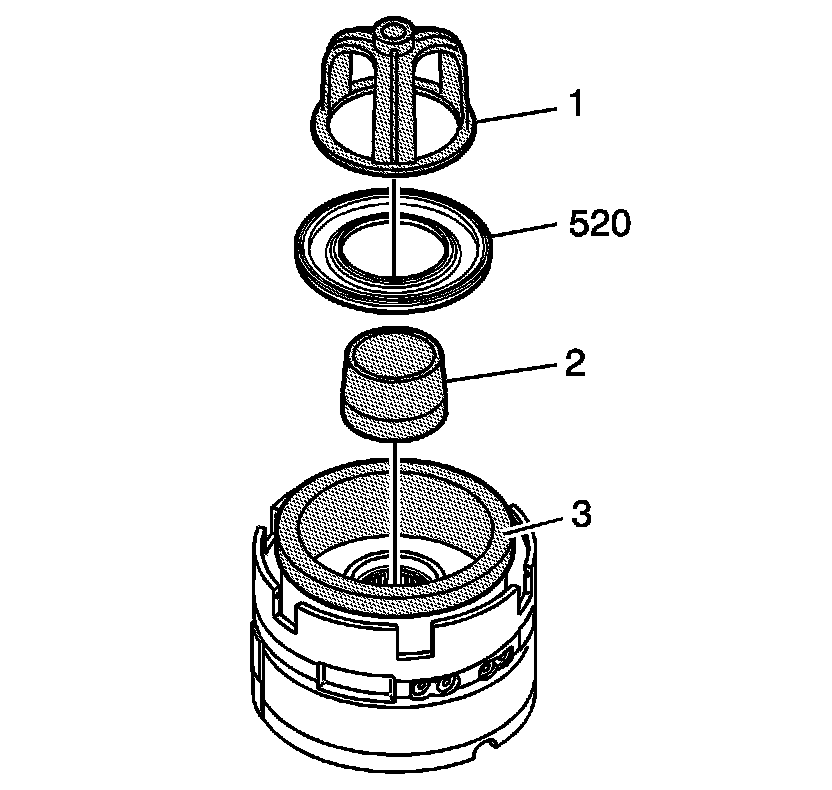
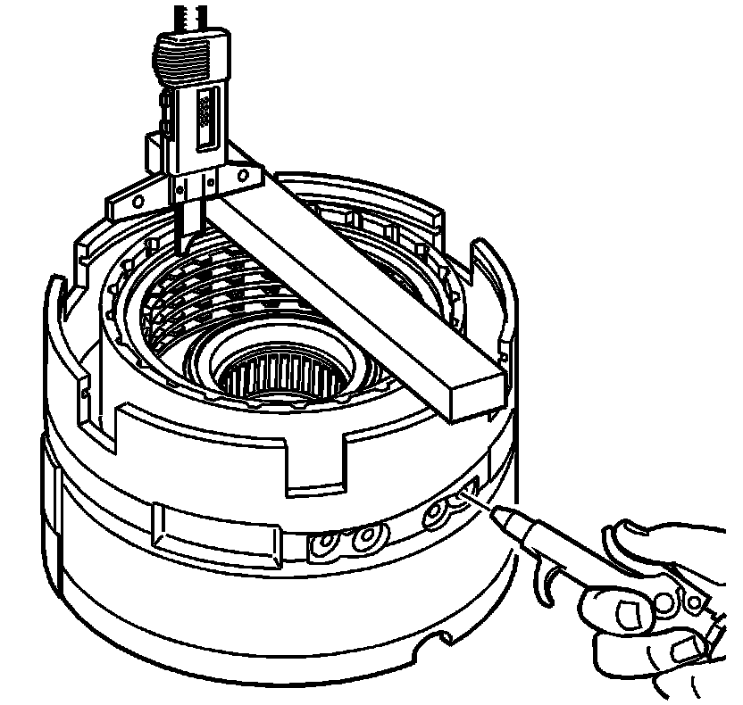
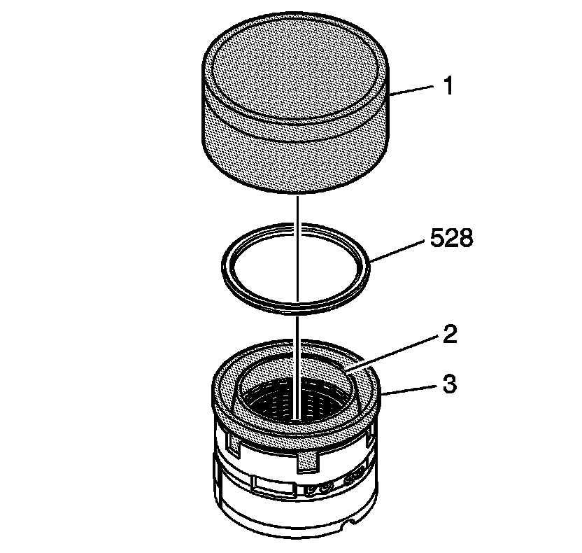
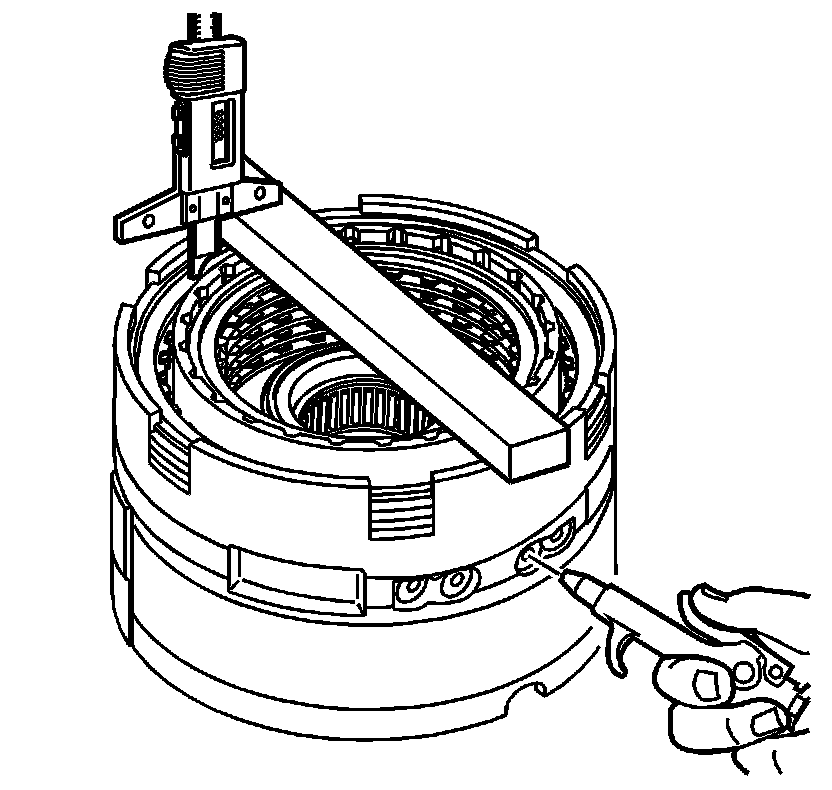
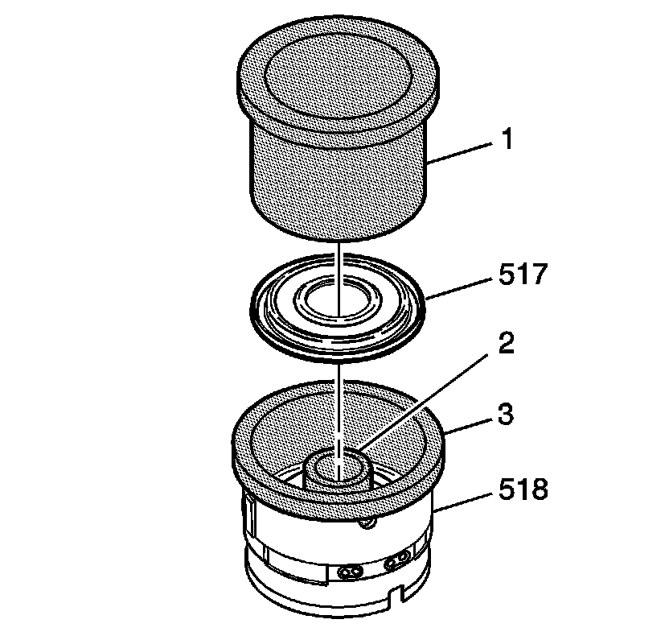
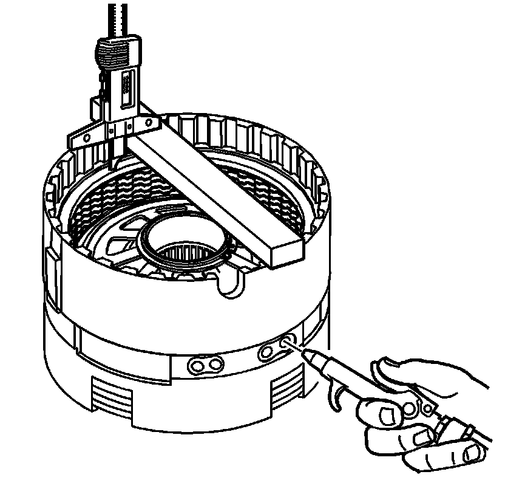
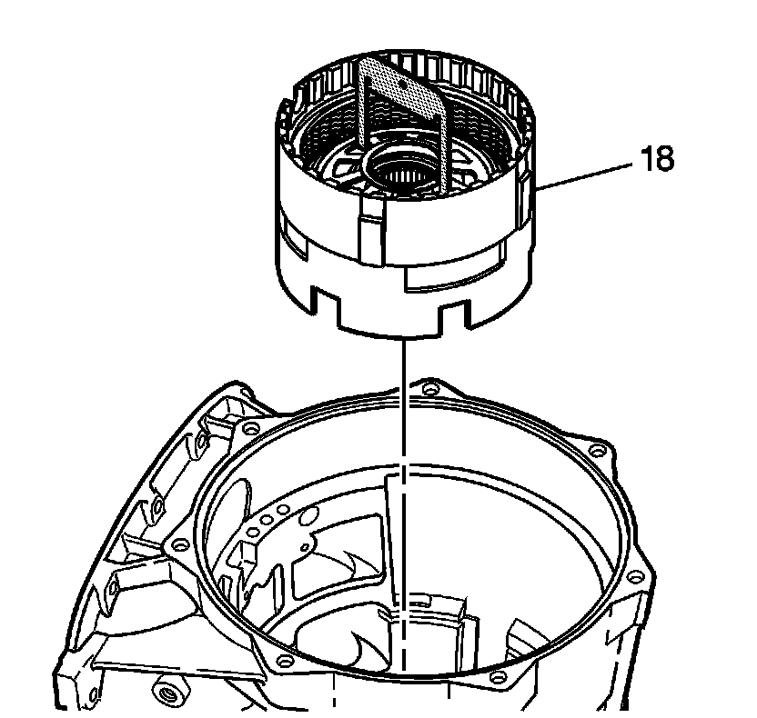

Center Support Assemble
Center Support Assemble
Tools Required
* J 23327 Clutch Spring Compressor
* J 45127 Center Support Removal Tool
* J 45136 Seal Protector
* J 45140 Seal Protector
* J-45688 Piston Installer - Pusher
* J 46239-1 Second Coast Clutch Outer Protector
* J 46239-2 Second Coast Clutch Inner Protector
* J 46239-3 Second Coast Clutch Pusher
* J-46240-1 Seal Protector
* J 46240-2 Seal Protector

1. Inspect the center support components for the following:
* Plugged fluid passages
* Worn or damaged splines
* Worn or damaged pistons
* Worn or damaged clutch plates
2. Install J-46240-1 (2), and J 45145 (3) into the housing.

3. Install the 2nd clutch piston (520).
4. Install the 2nd clutch piston spring (521) into the center support (518).
5. Use J 23327 to compress the 2nd clutch piston spring (521).
6. Install the 2nd clutch spring retainer ring (522) into the center support (518).
7. Remove J 23327 from the center support (518).

8. Install the 2nd clutch apply plate (523) into the center support (518).
9. Install the 2nd clutch plates. Start by installing the 2nd clutch plate (524) with external splines. Alternate with the 2nd clutch plate (525) with internal splines. Refer to Clutch Plate Selection Specifications (Clutch Plate Selection Specifications) .
10. Install the 2nd clutch backing plate (526) into the center support (518).
11. Install the 2nd clutch backing plate retainer ring (527) into the center support (518).

12. Measure the distance between the 2nd clutch backing plate and the bottom of the gage bar. Measure three times in different locations on the backing plate. Record this as H1.
13. Apply 65 PSI (448.17 kPa) of air pressure to the specified port. Measure the distance between the 2nd clutch backing plate and the bottom of the gage bar. Measure three times in different locations on the backing plate. Record this as H2.
14. Subtract H2 from H1 this is the 2nd clutch pack travel. Refer to Clutch Piston Travel Specifications (Clutch Piston Travel Specifications) .

15. Using J 46239-1 (3), J 46239-2 (2) andJ 46239-3 (1), install the 2nd coast clutch piston (528).

16. Install the 2nd coast clutch spring (529) into the center support (518).
17. Using J 23327 compress the 2nd coast clutch spring (529).
18. Install the 2nd coast clutch spring retainer (530) into the center support (518).
19. Remove J 23327 .

20. Install the 2nd coast clutch spacer (531) into the center support (518).
21. Install the 2nd coast clutch plates. Starting with the 2nd coast clutch plate (532) with external splines. Alternate with the 2nd coast clutch plate (533) with internal splines. Refer to Clutch Plate Selection Specifications (Clutch Plate Selection Specifications) .
22. Install the 2nd coast clutch backing plate (534).
23. Install the 2nd coast clutch backing plate retainer ring (535).

24. Measure the distance between the 2nd coast clutch backing plate and the bottom of the gage bar. Measure three times in different locations on the backing plate. Record this as H1.
25. Apply 65 PSI (448.17 kPa) of air pressure to the specified port. Measure the distance between the 2nd coast clutch backing plate and the bottom of the gage bar. Measure three times in different locations on the backing plate. Record this as H2.
26. Subtract H2 from H1 this is the 2nd coast clutch pack travel. Refer to Clutch Piston Travel Specifications (Clutch Piston Travel Specifications) .

27. Use the J-46240-1 (2), J-45688 (1) and the J 45136 (3) to install the low and reverse clutch piston (517) into the center support (518).

28. Use J 23327 , compress the low and reverse clutch piston spring (516).
29. Install the low and reverse clutch spring retainer ring (515) into the center support (518).

30. Install the low and reverse apply plate (514) into the center support (518).
31. Install the low and reverse clutch plates. Start with the low and reverse clutch plate (513) with external splines. Alternate with the low and reverse clutch plate (512) with internal splines. Refer to Clutch Plate Selection Specifications (Clutch Plate Selection Specifications) .
32. Install the low and reverse clutch backing plate (511) and the retainer ring (510) into the center support (518).

33. Measure the distance between the low and reverse clutch backing plate and the bottom of the gage bar. Measure three times in different locations on the backing plate. Record this as H1.
34. Apply 65 PSI (448.17 kPa) of air pressure to the specified port. Measure the distance between the low and reverse clutch backing plate and the bottom of the gage bar. Measure three times in different locations on the backing plate. Record this as H2.
35. Subtract H2 from H1 this is the low reverse clutch pack travel. Refer to Clutch Piston Travel Specifications (Clutch Piston Travel Specifications) .

36. Using J 45127 install the center support (18) into the case.